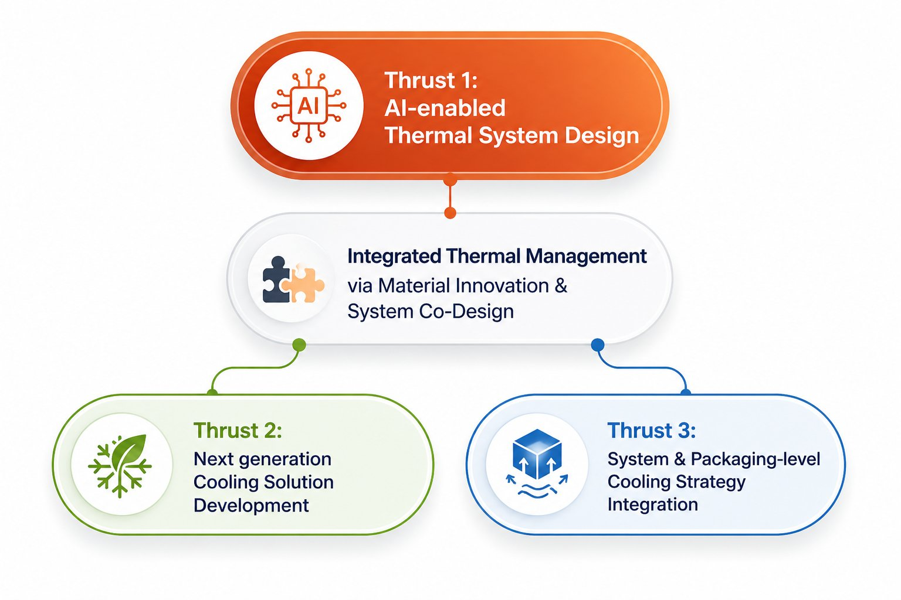
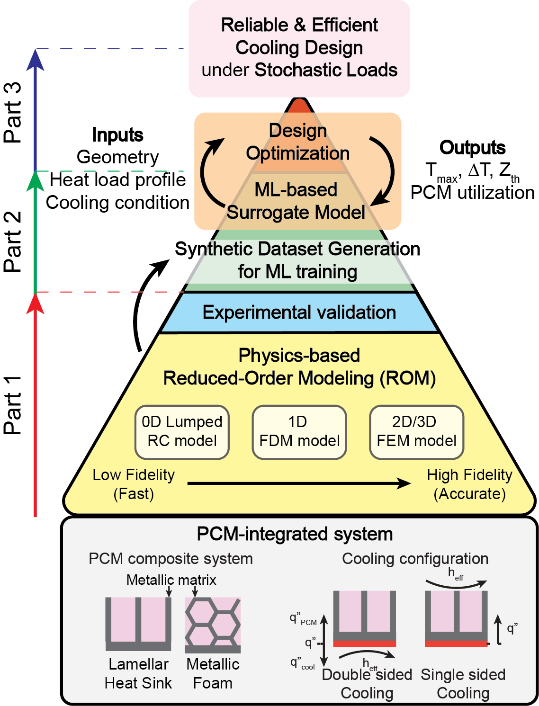
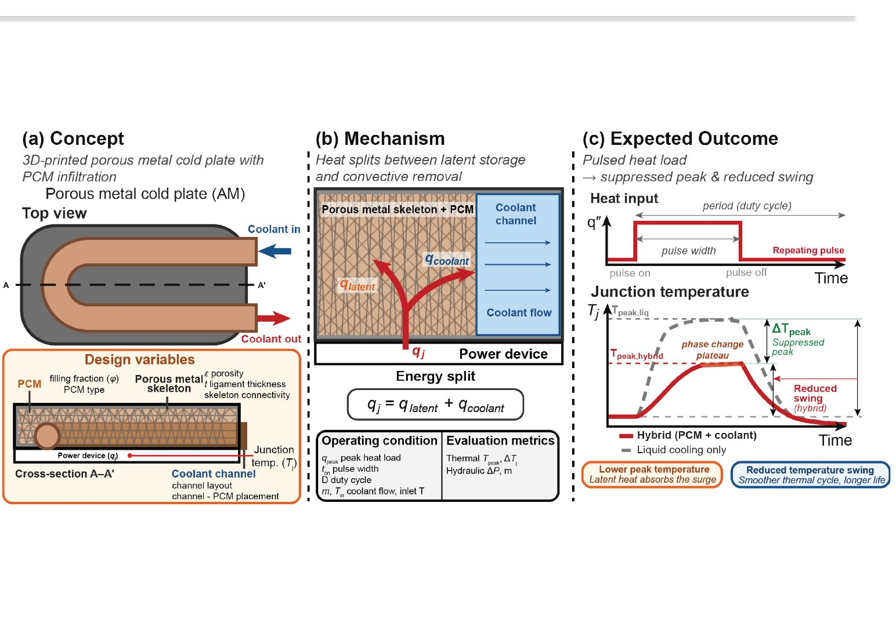
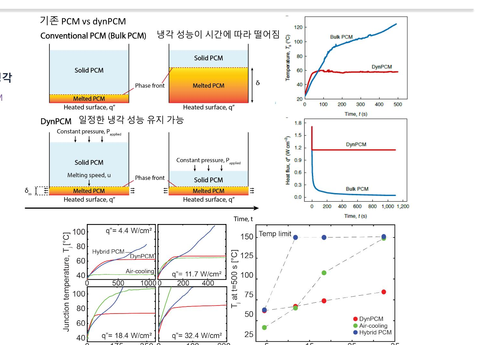
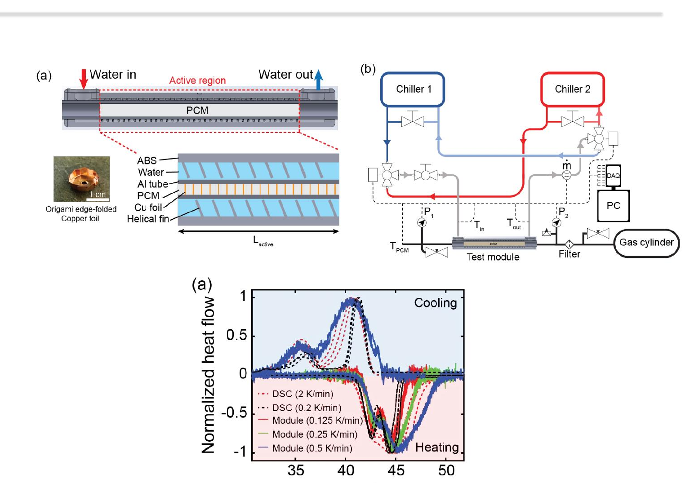

The Advanced Transient Thermal Systems Lab develops scalable cooling technologies for next-generation electronics, power systems, and data centers — combining phase change materials, transient heat transfer, and data-driven design.

I am an Assistant Professor in Mechanical Engineering at Kyung Hee University. My research lies at the intersection of heat transfer, materials engineering, and system design, with a focus on managing transient and high heat-flux conditions in modern thermal systems.
My work explores the integration of phase change materials (PCMs) into cooling architectures to address dynamic thermal loads that cannot be effectively managed by conventional steady-state approaches. I am particularly interested in bridging the gap between material behavior and system-level performance, enabling scalable and reliable thermal solutions for high-power electronics, data centers, and HVAC applications.
Prior to joining Kyung Hee University, I was a postdoctoral researcher at Texas A&M University with Prof. Patrick J. Shamberger, working on salt-hydrate eutectic-graphite foam composite PCMs (DOE BENEFIT) and barocaloric plastic crystal cooling systems (ONR). I received my Ph.D. in Mechanical Science & Engineering from the University of Illinois at Urbana-Champaign, co-advised by Prof. William P. King and Prof. Nenad Miljkovic, and my B.S. in Mechanical Engineering from Korea University.
As ATTS Lab is in its founding stage, the four projects below outline our planned research roadmap, set to launch sequentially as the lab grows. Together they integrate material innovation with system co-design to address the growing thermal challenges in modern electronics — organized under three complementary thrusts spanning AI-enabled design, novel cooling solutions, and system-level integration.
We aim to bridge the gap between novel thermal materials and real-world system requirements, addressing rising power densities in AI data centers and next-generation high-power electronics through three interconnected research thrusts.
Multi-fidelity modeling combining physics-based ROMs with machine learning surrogates to enable rapid optimization of thermal systems under realistic, stochastic operating conditions.
A multi-fidelity framework combining 0D/1D/2D reduced-order models with ML surrogates designs composite PCM heat sinks that perform reliably under stochastic, time-varying thermal loads.
Existing PCM designs are limited to static or periodic loads, leaving a gap for real-world variable loads. Our framework will enable reliability-driven thermal design for data centers and power electronics.

Novel cooling mechanisms — including PCM-integrated structures, two-phase, and pressure-tunable approaches — designed to handle transient and high heat-flux loads beyond the capability of conventional steady-state cooling.
Porous metal cold plates fabricated via additive manufacturing are infiltrated with PCM, integrating latent-heat buffering and liquid cooling into a single device for synergistic thermal performance.
Peak loads are absorbed by PCM latent heat while average loads are removed by liquid cooling — simultaneously suppressing peak temperatures and temperature swings in high heat-flux electronics.

Cooling architectures co-designed with electronic packaging — from chip-level interfaces to module- and system-level integration — translating material innovation into real device-level performance gains.
By applying mechanical pressure to solid PCM, the melted liquid is actively expelled — sustaining close-contact melting and preventing the cooling degradation that occurs as the melt layer thickens in conventional bulk PCM systems.
Solves the fundamental performance-decay problem of bulk PCM cooling, lowering peak temperature and reducing system-level cooling burden — enabling effective transient thermal management for high-power-density electronics.

A gas-pressurized, module-scale barocaloric heat-transfer test platform enabling simultaneous measurement of pressure-driven thermal effects and heat transfer, with a path toward system-level integration.
Existing barocaloric studies are limited to milligram-scale property characterization, making real-world heat-transfer behavior difficult to assess. This platform will evaluate barocaloric performance and heat transfer at the module level — bridging materials and system for next-generation HVAC refrigerants.

Selected journal articles in heat transfer and phase change materials. For the most up-to-date list and citation metrics, please visit Google Scholar.
We're actively recruiting motivated Ph.D. and M.S. students and undergraduate researchers passionate about heat transfer, materials, and computational modeling. All four research projects are available as thesis topics.